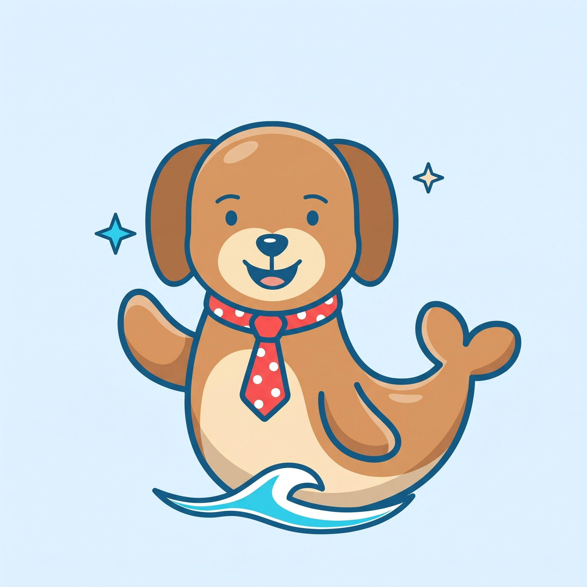

Pacientes de Huellitas
| Mascota | Propietario | Raza y peso | Acciones |
|---|---|---|---|
|
 Toby Perro · Macho |
Juan Carlos Pérez Morales C.I. 1712345678 | Labrador · 12,5 kg Nac. 14/05/2023 | ↗ Ver ✎ Editar 🗑 Eliminar |
Inicio › Mascotas
Pacientes que forman parte de nuestra familia.
+ Nueva mascota| Mascota | Propietario | Raza y peso | Acciones |
|---|---|---|---|
|
 Toby Perro · Macho |
Juan Carlos Pérez Morales C.I. 1712345678 | Labrador · 12,5 kg Nac. 14/05/2023 | ↗ Ver ✎ Editar 🗑 Eliminar |